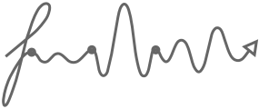
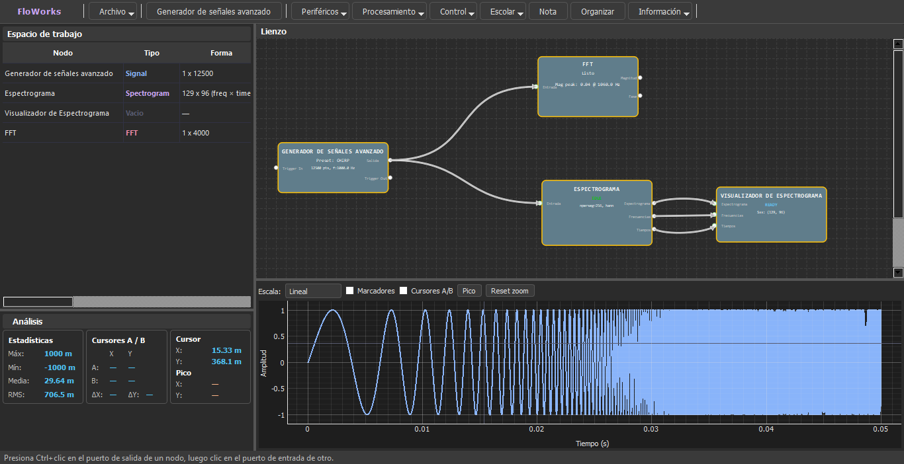

Inicio

Laboratorio visual universal para señales, instrumentación e IA
Procesamiento científico • DSP • VISA/SCPI • Automatización • Machine Learning

¿Qué es FloWorks?
FloWorks es un laboratorio visual de código abierto (Python + PySide6) donde construyes sistemas conectando bloques (nodos) en lugar de escribir líneas de código.
Imagina un lienzo digital donde unes generadores de señales, filtros matemáticos, controladores de hardware (VISA/SCPI) y modelos de Inteligencia Artificial mediante cables virtuales. Todo se basa en el flujo de datos: conectas la salida de un bloque con la entrada de otro para procesar información, automatizar equipos o analizar resultados en tiempo real.
Está orientado a estudiantes, investigadores, ingenieros y cualquier persona que quiera experimentar, aprender o prototipar sistemas complejos de forma intuitiva, sin la barrera de la programación tradicional.
Misión
Centralizar el flujo de trabajo experimental en una sola herramienta visual, abierta y accesible. Queremos que los usuarios se concentren en experimentar y descubrir, no en luchar contra la complejidad del software o los costos de las licencias.
Visión
Un mundo donde la única barrera entre una idea experimental y su ejecución sea la curiosidad del experimentador. FloWorks aspira a ser la plataforma de referencia para la ciencia y la técnica, construida por y para la comunidad global, eliminando los muros de las herramientas privadas.
Principios
- Libertad Total (MIT License): El conocimiento y las herramientas deben ser libres y accesibles para todos.
- Extensibilidad Infinita: Si falta un bloque, cualquiera puede crearlo e integrarlo al ecosistema usando Python.
- Transparencia Visual: Cada paso del proceso se puede inspeccionar, depurar y entender gráficamente.
- Conexión con el Mundo Real: No es solo simulación; permite controlar instrumentación científica real directamente desde el lienzo.
A diferencia de herramientas cerradas o altamente especializadas, FloWorks está diseñado como un ecosistema modular extensible donde cada componente es un nodo reutilizable y conectable.
Capacidades principales
-
Ecosistema de Nodos Extensible
Catálogo técnico organizado en capas: Fuentes, Procesamiento, Control, Hardware y Scripting.
Registro dinámico, serialización declarativa y contratos claros para desarrollo rápido.
-
Integración VISA/SCPI
Conexión directa con osciloscopios, LCR meters y generadores.
Soporte multicanal, simulación integrada vía
PyVISA-pyy gestión de firewall en modo portable. -
Formato Portable
.sflowEstándar ZIP autocontenido con grafo JSON, arrays
.npyy metadatos.Reproducibilidad total de experimentos y normalización DPI automática.
-
Internacionalización Avanzada
Cambio de idioma en caliente sin reiniciar la app.
Traducciones JSON jerárquicas y persistencia de preferencias.
-
SDK y Desarrollo Rápido
Plantilla base (
template_node.py), mixin de serialización y guías paso a paso.Arquitectura preparada para plugins y expansión comunitaria.
Áreas de aplicación
| Área | Aplicaciones |
|---|---|
| 🎓 Educación | Física, electrónica, matemáticas, laboratorios STEM |
| ⚙️ Ingeniería | DSP, control, instrumentación, metrología |
| 🤖 IA | ML, optimización, pipelines híbridos |
| 🔬 Investigación | Automatización y adquisición de datos |
| 🔌 Hardware | VISA/SCPI, simulación y sistemas híbridos |
Modelo Open Core
FloWorks utiliza un modelo Free/Open Core bajo MIT License.
El núcleo permanece libre y abierto, mientras que futuras extensiones empresariales, curriculares o marketplace serán opcionales.
FloWorks
Procesamiento visual • Instrumentación • Ciencia • IA
Documentación construida con MkDocs Material